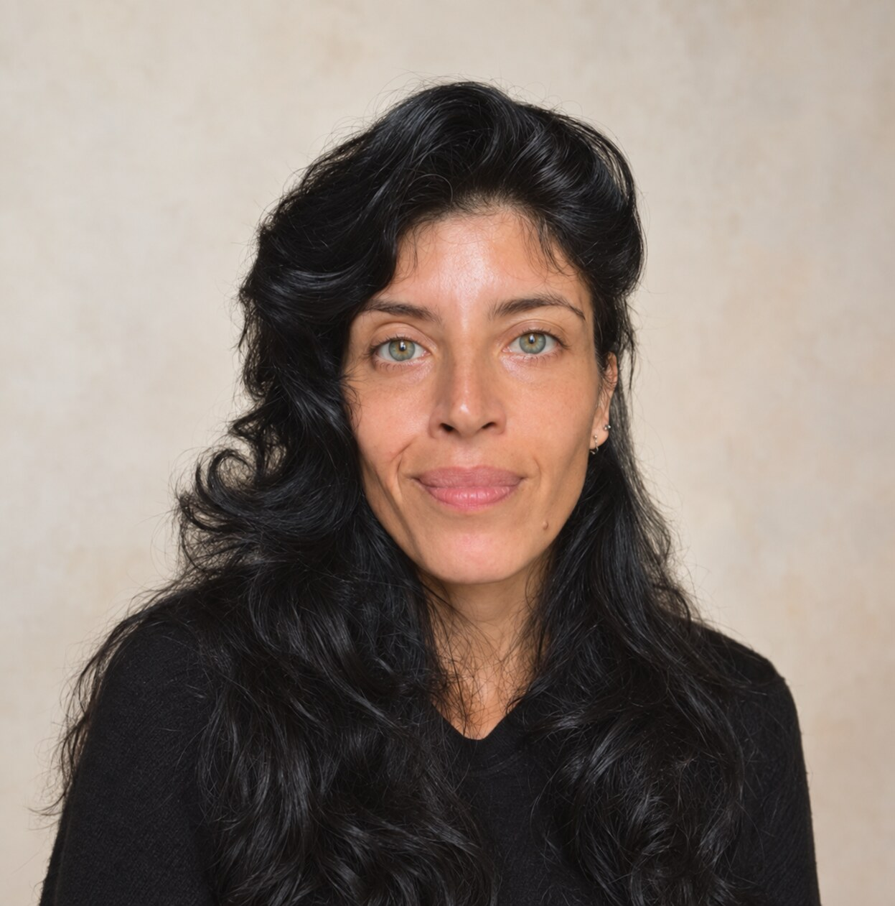

01
Historias sonoras por encargo
Investigación, enfoque narrativo, guion, locución y producción de una pieza original para agencias, marcas, editoriales e instituciones.
Investigo, escribo, narro y produzco contenidos sonoros para proyectos culturales, editoriales y creativos.

Creo piezas narrativas sobre culturas, lugares y proyectos con una historia que contar. Un servicio integral que combina investigación, guion, voz y producción.
Cada propuesta se adapta al tema, al público y al formato que el proyecto necesita.
Investigación, enfoque narrativo, guion, locución y producción de una pieza original para agencias, marcas, editoriales e instituciones.
Desarrollo de concepto, formato, guiones, grabación y producción de series con una identidad narrativa consistente.
Narración en español neutro y argentino para documentales, contenidos educativos, meditaciones, publicidad y proyectos editoriales.
Transformación de temas, entrevistas y materiales de referencia en relatos claros, rigurosos y atractivos para escuchar.
Quince episodios sobre creencias, símbolos, rituales y formas de entender la vida balinesa.
Conocer el proyecto →Reflexiones inspiradas en libros: una invitación a pensar, detenerse y escuchar con atención.
Ver en YouTube →Un diario sonoro grabado durante caminatas por los arrozales de Bali.
Escuchar en Spotify →Una selección de registros y formatos de narración profesional.
Escuchar demo →Contame brevemente de qué se trata. Trabajo de forma remota desde Bali con proyectos de distintos lugares del mundo.
heidybarrientoss@gmail.com